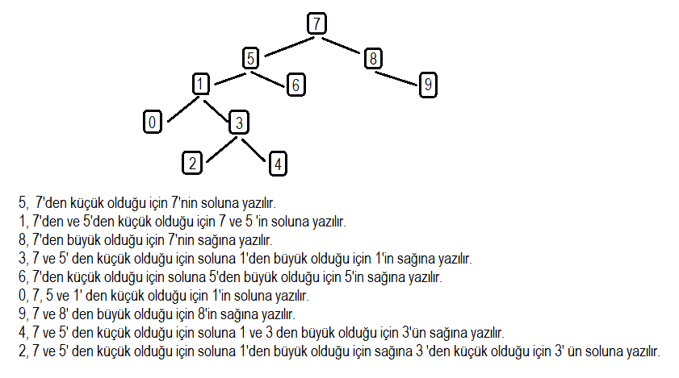

[7, 5, 1, 8, 3, 6, 0, 9, 4, 2] dizisinin Binary-Search-Tree aşamalarını yazınız.
Root = 7
Binary Search Tree ' de eleman eklemek için root' dan başlanır.
Root ' dan küçük sayılar sol tarafa, büyük sayılar ise sağ
tarafına yazılırak bir ağaç(tree) yapısı oluşturulmuş olur.
